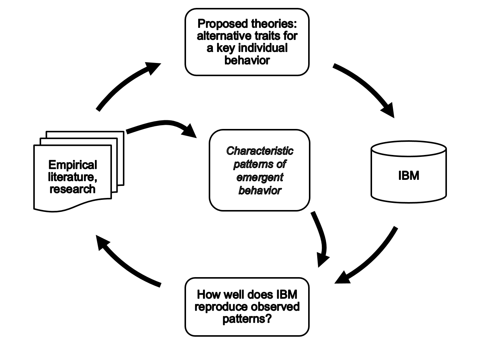

Theory Development
EES 4760/5760
Agent-Based and Individual-Based Computational
Modeling
J. Magnolia Gilligan
Class #21:
Tuesday, November 10,
2026
Models as a Virtual Laboratory
- How to use models to run experiments?
- Strong inference (John
Platt)
- Identify traits (individual behaviors) that give rise to
multiple macroscopic patterns
- Identify alternative traits (hypotheses)
- Implement traits in ABM
- Test and compare alternatives:
- How well did model reproduce observed patterns?
- Falsify traits that did not reproduce patterns
- Repeat cycle as needed. Revise behavior traits, look for
additional patterns, etc.
Pattern-Oriented Modeling Cycle

Example: Trader intelligence
Example: Trader intelligence
Continuous Double Auction
- Traders establish buying and selling prices
- If someone offers a price \(\ge\)
selling price, trader sells.
- If someone offers to sell for \(\le\) buying price, trader buys
- Match traders:
- If traders \(i\) and \(j\) have \(P_{i,\text{buy}} \ge P_{j,\text{sell}}\),
then transaction occurs.
Different Models of Agent
Intelligence-models
Zero-intelligence
agents:
- Agents set random buying and selling prices
- If an agent has \(P_{\text{buy}} >
P_{\text{sell}}\), then they will lose money.
Minimal-intelligence
agents
- Random buying and selling price with constraint:
- Each agent sets its \(P_{\text{buy}} <
P_{\text{sell}}\).
- Sales can still happen because agents \(i\) and \(j\) may have
- \(P_{i,\text{buy}} \ge
P_{j,\text{sell}}\)
- Even though
-
\(P_{i,\text{buy}} <
P_{i,\text{sell}}\) and \(P_{j,\text{buy}} <
P_{j,\text{sell}}\)
- Example:
- i: \(P_{\text{buy}} = 15\), \(P_{\text{sell}} = 20\)
- j: \(P_{\text{buy}} = 10\), \(P_{\text{sell}} = 12\)
Results
- Compare simulated market to transactions from real markets
- Minimal-intelligence agent was better than zero-intelligence
- Zero-intelligence produced wild price fluctuations
- Minimal-intelligence reproduced observed pattern of rapid price
convergence
- Minimal-intelligence also reproduced observed effects of
price-ceiling.
- But simple models had limits:
- Observed volatility of lower-end prices was not reproduced by
models
- As experimental markets got more complicated, human traders did
worse, but models did much worse.
Lessons
Using zero-intelligence as a baseline, the researcher can ask: what
is the minimal additional structure or restrictions on agent behavior
that are necessary to achieve a certain goal.
Example: Harvesting Common Resource
Example: Harvesting Common Resource
- Experimental subjects move avatars on screen to harvest tokens
(like simple video game)
- Players compete to get most tokens
- Tokens grow back at some rate
- Patterns:
- Number of tokens on screen over time
- Inequality between players
- # tokens collected in first four minutes
- Number of straight-line moves
Theory development
- Naïve model 1: (random) Moves randomly
- Naïve model 2: (greedy) Always goes to nearest token
- Clever model:
- Prefers nearby tokens
- Prefers clusters of tokens
- Prefers tokens straight ahead
- Avoids tokens close to other players
Results:
- Naïve models do not match any of the four patterns.
- Ran clever model 100 times for each of 65,536 different
combinations of parameters that characterize preferences.
- Only 37 combinations of parameters matched all four patterns in
data.
- Patterns 2 and 3 are seen for most parameter values
- Patterns 1 and 4 seen less frequently
- Therefore:
- Patterns 2 and 3 are built into the structure of the game.
- Patterns 1 and 4 may give insight into human behavior.
Observed Behaviors
- Groups occupy spatial territories
- One alpha of each sex in a territory
- Only alpha pair reproduces
- If alpha dies, oldest subordinate of that sex becomes
alpha
- Scouting forays
- Subordinate adult leaves territory
- If it finds territory without alpha, it stays, becomes alpha
- Otherwise, returns home
- Risk of predation (death) is high on scouting forays
- Alpha pair breeds once a year, in December
Observed Patterns
-
Characteristic group size distribution (adults)
Average age of birds on scouting forays is younger than
average age of all subordinates.
Scouting forays most common April–October
Modeling Wood Hoopoe
- Start simple:
- One-dimensional world
- One tick = one month
- Every tick, bird has 2% chance of dying (0.98 probability to
survive)
- Scouting forays have 20% chance of death (0.80 probability to
survive)
- Adult subordinates go scouting at random (10% probability each
tick)
- Does model reproduce patterns?
Developing Alternative Strategies
Alternative Strategies:
Random: Subordinates go scouting randomly with
probability p-scout.
Always: Subordinates always go
scouting
Never: Subordinates never go
scouting
Direct: Subordinates calculate the
probability of reproducing within a certain time horizon if they go
scouting or if they stay in the next and wait to become alpha. They
choose the option that gives the greatest probability of
reproducing.
-
Indirect: Approximate the direct method by
scouting randomly, with a probability that depends on the number of
subordinate adults older then them: \[P_{\text{scout}} = 1 -
\left(0.5\right)^{\text{elder subordinates}}\]
| 0 |
0% |
| 1 |
50% |
| 2 |
75% |
| 3 |
87.5% |
| … |
… |